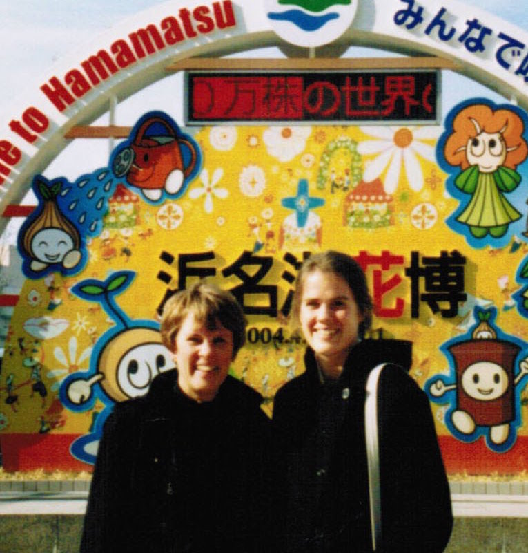

Pratice in creating a grid system in Bootstrap. Uses HTML, CSS and Bootstrap.
Information on visting the Hawaiian Islands. Uses HTML, CSS and Bootstrap.
Displays adopted and waiting pets. HTML, practice in cascading and nesting in CSS.
Information on the band. HTML, ractice in using CSS float and box model.
Information and blogging about a fictional cupcake shop. HTML, practice with CSS style classes, using divs and spans.
HTML and CSS. Pratice in linking style sheets and applying CSS styles.
Information about how to go to Gilligan's Island. HTML and CSS. Practice github branching and merging.
Includes our favorite things. HTML. Practice in using git and html.
In my career so far I've worked as a non-profit program coordinator, a teacher to adult learners and a journalist. My skills are in program mamagement (recruiting and managing volunteers, short and long-term planning, etc.), teaching adults learners in the areas of ESL and personal finance and communications skills related to print journalism (writing, editing and page layout). In the next phase of my career, I hope to use these skills as a web developer. Mainly, I will employ and further develop skills in problem solving, editing and translating technical information. Additionally, I hope to use skills as a manager, planner, designer, teacher and writer.
I love to travel and to experience new cultures.  I've lived and worked as a ESL teacher in Japan, Mexico and England. I've also studied Spanish in South America. But Portland is the town I've always called home. I'm currently raising two kids here with my partner Thacher. Together we enjoy all kinds of outdoorsy activities (hiking, biking, boating, camping, pinicing), playing music, making new friends and taking care of our cat Stripes.